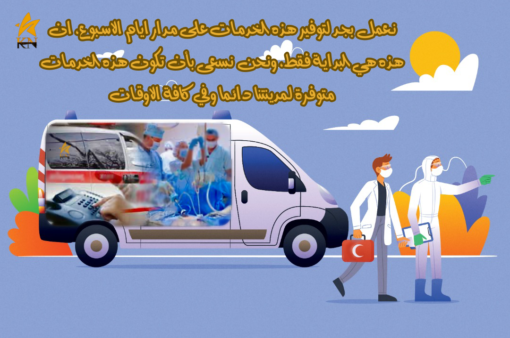

خدمة (قسم الصحة) هي عصب الحياة بتطبيق KN الخدمي، اذ يعتبر هذا القسم هو ركن اساسي وهدف سامي ضمن الرؤية المستقبلية للشركة لتعزيز العمل الإنساني وتقديم خدمات صحية حيوية للمواطنين، ويدعم الكوادر الطبية على حدٍ سواء، وهذا القسم يتفرع الى جزئين مهمين لضمان تقديم الرعاية الصحية الأساسية والخدمات الطبية بطريقة شاملة، جزءٌ خاصٌ بالتواصل مع الاطباء والفنيين الصحيين والممرضين ومختلف الكوادر الطبية في المدينة، وجزء متخصصٌ لخدمة الاسعاف الطاريء المجانية (لذوي الاحتياجات الخاصة)، وذلك من أجل ان يسهل على المواطنين الحصول الخدمات الصحية اللازمة، ويدعم الكوادر الطبية في المدينة بتيسير وصولهم الى اكبر عدد ممكن من شرائح المجتمع.
إن توفير وتعزيز الرعاية الصحية يتطلب التواصل والتعاون الفعال مع الأطباء والفنيين الصحيين والممرضين وكل من يشارك في تقديم الخدمات الصحية، اذ يتيح قسم (الصحة) في تطبيق KN سهولة التواصل مع المتخصصين الصحيين لتبادل المعلومات الصحية، او لتنسيق مواعيد الزيارة او طلب مساعدة اضافية خاصة، وهذا التفاعل يعزز جودة الخدمات الصحية ويساعد في تطوير قدرات وخبرات الكوادر الطبية في كل مدينة بالاضافة الى زيادة دخلهم المادي.
القسم الثاني: خدمة المساعدة الطارئة (لذوي الاحتياجات الخاصة).
يعد هذا القسم والذي يتعامل مع الاخوة ذوي الاحتياجات الخاصة من ارقى واسمى الخدمات الإنسانية والاجتماعية، اذ بني هذا القسم على اساس تطوعي لهدف توفير مساعدة دائمة و مجانية لهذه الفئة المهمة من المجتمع ويسهم في تحسين جودة حياتهم والحفاظ على صحتهم.
فائدة قسم الصحة:
1. يقدم هذا القسم فرصة للمواطنين الوصول إلى الرعاية الصحية الأساسية بسهولة ومرونة، اذ يمكنهم من التواصل مع اخصائيين الصحة الذين هم في نفس مدينتهم والحصول على استشارات طبية سريعة، وتنظيم مواعيد الزيارة وغيرها.
2. يمكن الاستفادة من خدمة المساعدة الطارئة المجانية لذوي الاحتياجات الخاصة في حالات الضرورة، مما يضمن الرعاية الفورية لمن هم في حاجة ماسة اليها في حين تعذر وصولهم الى المستشفى لأي سبب من الاسباب مثلا، او لاسباب اخرى تمنعهم من الحصول على مساعدة طبية منزلية.
3. يمكن للكوادر الطبية أن تسهم في تعزيز مهاراتهم وزيادة دخلهم المادي، عبر تقديم خدماتهم والمشاركة في تقديم الرعاية الصحية لاكبر شريحة ممكنة من الناس في مدنهم، ويمكنهم ذلك من توسيع مدى تأثيرهم في المجتمع لترك اثرهم إيجابي على صحة وسلامة مجتمعهم.
الخلاصة
في الختام، تمثل خدمة الصحة في تطبيق KN نموذجًا مثاليًا للتواصل والتعاون بين الشركات والكوادر الطبية والمجتمع المحلي، وذلك بهدف تعزيز تقديم الرعاية الصحية الأساسية والمساعدة الطارئة، فيعكس ذلك رؤية إنسانية واجتماعية وتقنية متكاملة تهدف إلى تحسين الحياة والصحة للجميع.